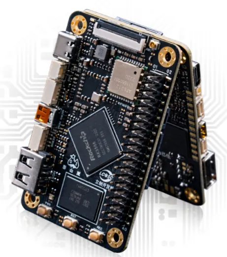
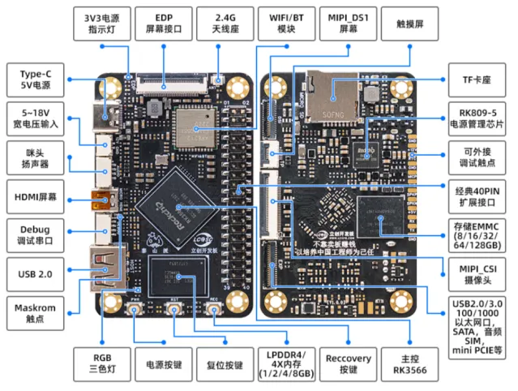
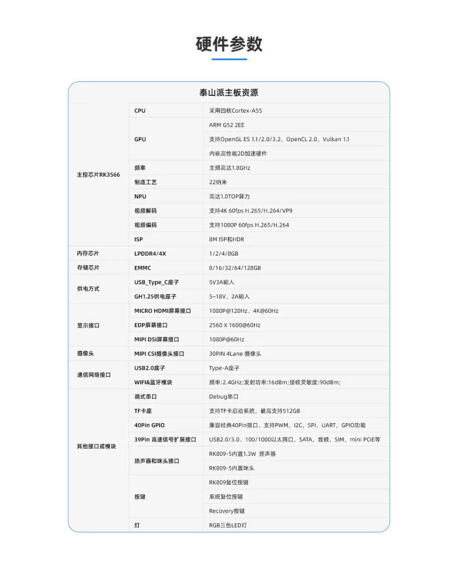

<!DOCTYPE lake>
<p data-lake-id="u09e65b86" id="u09e65b86"><span class="lake-fontsize-11" data-lake-id="u9929f56e" id="u9929f56e" style="color: var(--yq-text-primary)">泰山派是一款开源的卡片电脑,提供全面开放的软硬件资料,愿与志同道合的的伙伴们共同推动技术的发展和创新。 小巧的板子搭载了高配的处理器、引出丰富的外部资源、多样性SDK、赋予创意无限可能。 软硬件结合、项目式学习、解决项目落地难问题、让每一个想法变成现实。<br/><br/></span><strong><span class="lake-fontsize-22" data-lake-id="u9d8fb810" id="u9d8fb810" style="color: var(--yq-text-primary)">应用场景</span></strong><span class="lake-fontsize-22" data-lake-id="uff247239" id="uff247239" style="color: var(--yq-text-primary)"><br/></span><span class="lake-fontsize-11" data-lake-id="ucaee0ecf" id="ucaee0ecf" style="color: var(--yq-text-primary)"><br/>1卡片电脑：办公、编程开发，家庭娱乐、编程教育等<br/>2Linux服务器：私有云、软路由、NAS、个人WEB服务器等<br/>3家庭智能化中枢：电视盒子、智能家居控制、传感器数据分析、安防监控等<br/>4工业化：电子广告牌、自动售卖机、机器人、无人机等<br/>5嵌入式开发板：加速嵌入式项目验证及开发<br/><br/><br/></span></p><p data-lake-id="ue128ede3" id="ue128ede3"></p><p data-lake-id="ub5a39cac" id="ub5a39cac"><span class="lake-fontsize-11" data-lake-id="ua0e6c666" id="ua0e6c666" style="color: var(--yq-text-primary)"><br/><br/></span></p><p data-lake-id="u01a1837a" id="u01a1837a"></p><p data-lake-id="uf2eeab2b" id="uf2eeab2b"><span class="lake-fontsize-11" data-lake-id="udac91278" id="udac91278" style="color: var(--yq-text-primary)"><br/></span><strong><span class="lake-fontsize-22" data-lake-id="u62d4f29f" id="u62d4f29f" style="color: var(--yq-text-primary)">硬件参数</span></strong><span class="lake-fontsize-22" data-lake-id="ua529d375" id="ua529d375" style="color: var(--yq-text-primary)"><br/></span><span class="lake-fontsize-11" data-lake-id="uf965fa20" id="uf965fa20" style="color: var(--yq-text-primary)"><br/></span><span class="lake-fontsize-11" data-lake-id="u8298cc07" id="u8298cc07" style="color: var(--yq-text-primary)">立创泰山派采用 22nm制程 4核 Cortex-A55的64位 CPU </span><strong><span class="lake-fontsize-11" data-lake-id="u1a89ce4a" id="u1a89ce4a" style="color: var(--yq-text-primary)">RK3566 </span></strong><span class="lake-fontsize-11" data-lake-id="u9f8542ad" id="u9f8542ad" style="color: var(--yq-text-primary)">  , 主频高达1.8GHz. 集成 ARM Mali-G52 GPU , 支持 4K 60fps解码， 1080P 60fps 编码， 支持8M ISP 和 HDR， 内置1T ops算力的AI加速器 NPU。 内存提供： 1/2/4/8 GB可选， 存储：EMMC（8/16/32/64/128GB） ，最高支持512GB的TF扩展</span><span class="lake-fontsize-11" data-lake-id="u23d41c90" id="u23d41c90" style="color: var(--yq-text-primary)"><br/></span><span class="lake-fontsize-11" data-lake-id="ud00a92cd" id="ud00a92cd" style="color: var(--yq-text-primary)"><br/><br/></span></p><p data-lake-id="ucfc2b8c8" id="ucfc2b8c8"></p><p data-lake-id="ua1836e5d" id="ua1836e5d"><span class="lake-fontsize-11" data-lake-id="u2a6af995" id="u2a6af995" style="color: var(--yq-text-primary)"><br/><br/></span></p><p data-lake-id="ufc7c9ec4" id="ufc7c9ec4"></p>